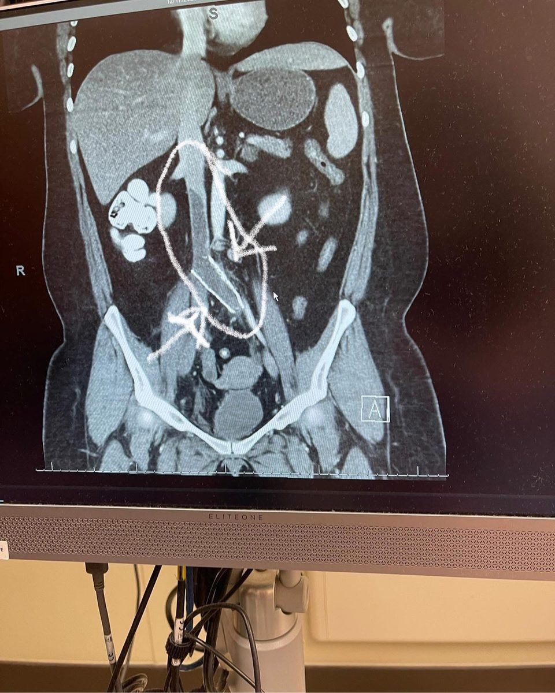

Follow my journey
From St. Louis to the archive.
Documenting what matters — first my family, then the record itself. Here's how one thing led to another.
St. Louis
Born and raised in St. Louis, with deep roots there — my great-grandfather Rodebaugh helped build the Gateway Arch. That city made me: its history, its neighborhoods, its stubborn pride.
I'm writing a memoir, My Assigned Place, about my mother Rose — who kept her own archive in a bedroom closet: newspapers, photographs, obituaries, the papers that named what she couldn't quite name herself. Her closet was the same impulse I now follow through the stacks at UAH: a refusal to let people be forgotten.
Building a family, finding a way out
Those years were about survival and building — raising young children (born 2008, 2012, and 2013), juggling multiple jobs, attempting school when I could, and trying to find a way out of poverty. In 2012 I was diagnosed with Crohn's disease, something doctors had suspected my whole life. Then in 2013 and 2014 came lupus and fibromyalgia diagnoses. And in 2013, my mom passed away — suddenly St. Louis felt small.
Junction City, Kansas — the studio years begin
We moved to Junction City, Kansas, and I built my photography business from the ground up. I'd always loved photography — I'd volunteered alongside other photographers for years — and then I bought my own DSLR and started practicing. Honestly, I'm still not sure which I loved more: the shooting, or building the business and the client relationships. Over the next four years the studio served more than 200 clients.
Heart attack
I survived a heart attack. It was terrifying — and it rearranged my sense of what matters and how little time any of us is promised.
Ten days
A catastrophic blood clot event — kidney failure, a stroke in my right temporal lobe, and ten days in a coma. I woke up just before Christmas 2020; it took about a month to understand what had happened. During the coma, I had a spiritual experience I still carry with me. Surviving changed my perspective on everything — including healthcare in America, though I'm still finding the words for that part.

Emme, at 34 weeks
My daughter Emme was born at just 34 weeks at VCU in Richmond, Virginia, and spent her first days in the NICU. I brought my camera because that's what I do when something matters — I document it.
Back to school
Began Calhoun Community College, starting the degree path in earnest.
Foster parenting
Served as a foster parent in Alabama — some of the most meaningful work I've ever done. I've pressed pause to finish my degree, take internships, and study for the LSAT, but that chapter isn't closed.
First degree
A.S. General Education (Sociology), Calhoun Community College.
UAH
Began the University of Alabama in Huntsville — B.A. Political Science, Philosophy major, Sociology minor, Pre-Law Certificate (expected May 2028).
Beyond Avalon
Archival research on slavery, memory, and place through the RCEU / Summer Community of Scholars program. This project is deeply personal to me — recovering names the record tried to erase, on land I walk every day.
First place
First place, UAH Summer Community of Scholars poster session, for "Institutional Erasure at Avalon Plantation: Reclaiming Black History in Huntsville, Alabama."
New platforms
Began developing The Counter-Archive, a 185-episode educational video series — and joined a state legislative campaign as a campaign coordinator intern, doing policy and demographic research.
Taking the work on the road
Applied to present at the Mid-South Sociological Association conference, and preparing an application for a public history conference — bringing the Avalon research to wider audiences.
Law school applications
Applying to JD/MA programs.
Graduation
Expected UAH graduation.